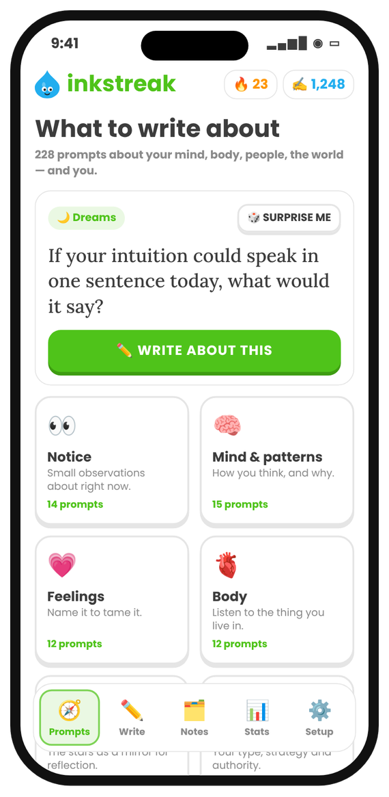
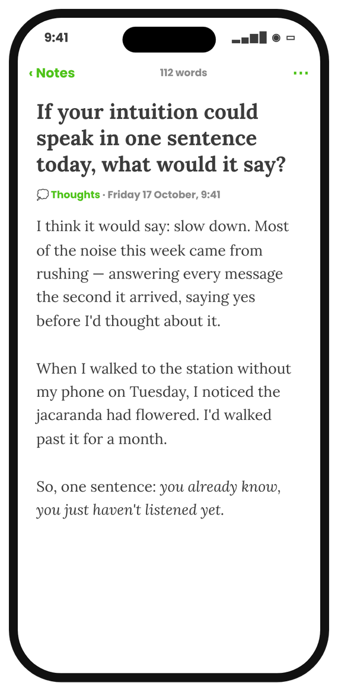
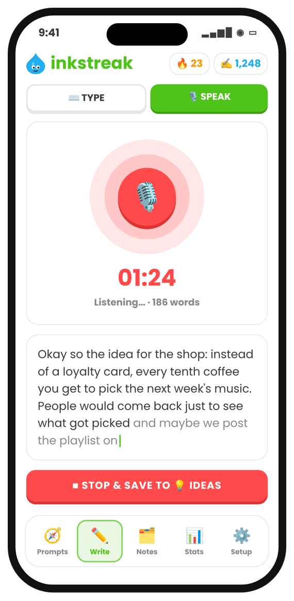

Journaling
A journal that gets you writing
Prompts for when your mind is blank, a calm page when it isn't, and a streak that makes it a habit — without pressure or word goals.
Coming to the App Store7 days free, then $7.99/month or $49.99/year.

Prompts
Something good to write about
228 prompts across 21 themes, from small observations to big questions.
- Prompt of the day
- Feelings, memories, gratitude, hard days
- Astrology and Human Design for reflection

Write
Morning pages, evening reflections
Full-screen focus mode. Your journal entries keep their prompt as a headline, so you can find them later.
- Folders like Journal, Gratitude, Dreams
- Search every entry
- Export anytime

Voice
Voice journaling
Talk on a walk and it becomes a written entry.
- Transcribed on your iPhone
- One tap from the Lock Screen

Questions
Is there a word goal?
No. Inkstreak counts a streak — any writing on a day keeps it going. Three sentences count.
Is my journal private?
Yes. Entries stay on your iPhone. There's no account and no server.

Write a little every day.
7 days free, then $7.99/month or $49.99/year. No account. No ads.
Launching on the App Store very soon. Follow along: get an email when it's out.